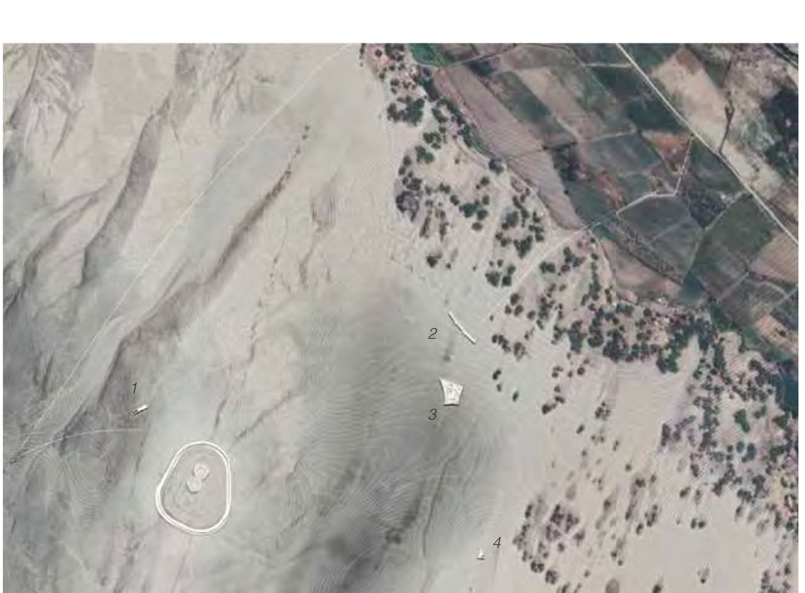
An observatory at Chankillo, Peru — a place that manifests as a threshold, oscillating between past and future. The project investigates interstitiality: how can space commit to a singularity without excluding one or the other?
Aerial site plan of the Chankillo observatory project, Peru
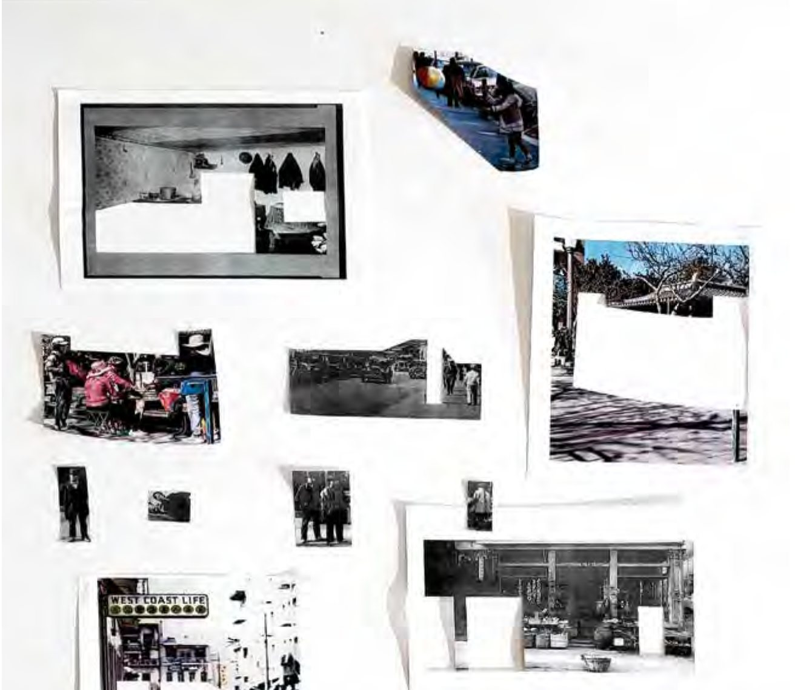
A renovation bridging Portsmouth Square and the Hilton Hotel in San Francisco’s Chinatown. Identities are constellations of cultures collected as multiples — the project embraces this multiplicity toward an architecture of hybridity, a third space.
Atlas of event and space collage, Portsmouth Square San Francisco
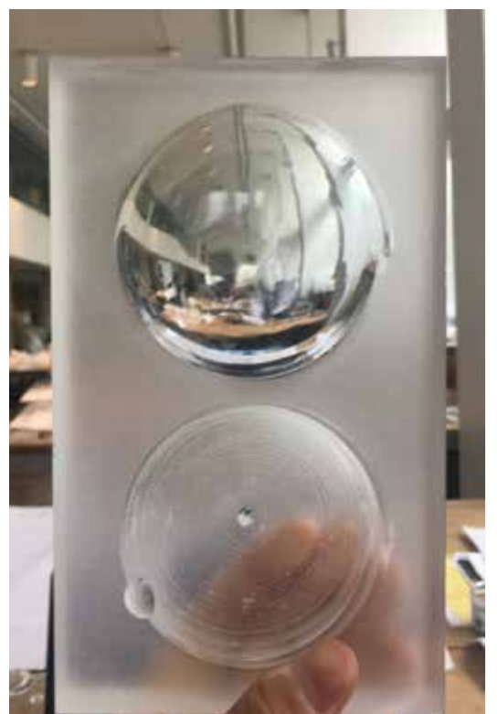
An investigation of material utility over performance at Seagram Plaza, Manhattan. Glass hasn’t reached its potential beyond the simple envelope — CNC-milled and etched, it expresses the tectonic values of the material: dissipating, distorted, intimate.
CNC-etched glass study for the Glass Pavilion
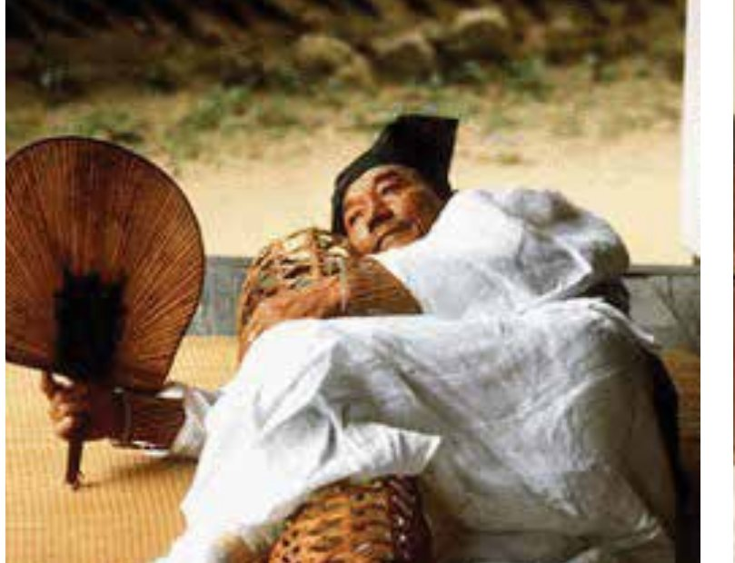
The bamboo wife — once a revered indigenous pillow, a device that cools the body on summer days. Through deconstructing and reconstructing in hand craft, the project re-orients its cultural meaning toward a tactile communication celebrating intimacy within the public realm.
The bamboo wife, Jook Bu-In, in use
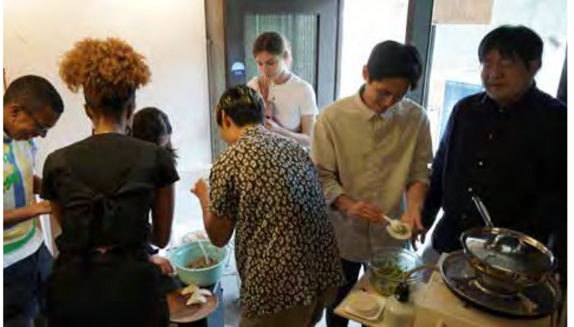
Kitchen is a way of connecting bodies — spatial, biological, cultural. To constitute kitchens as centers of architecture, spaces appear as fragments hosting all walks of life: small moments as memories, encapsulating something universal, communicable prior to words.
Collective cooking session, Kitchen within Boundaries research
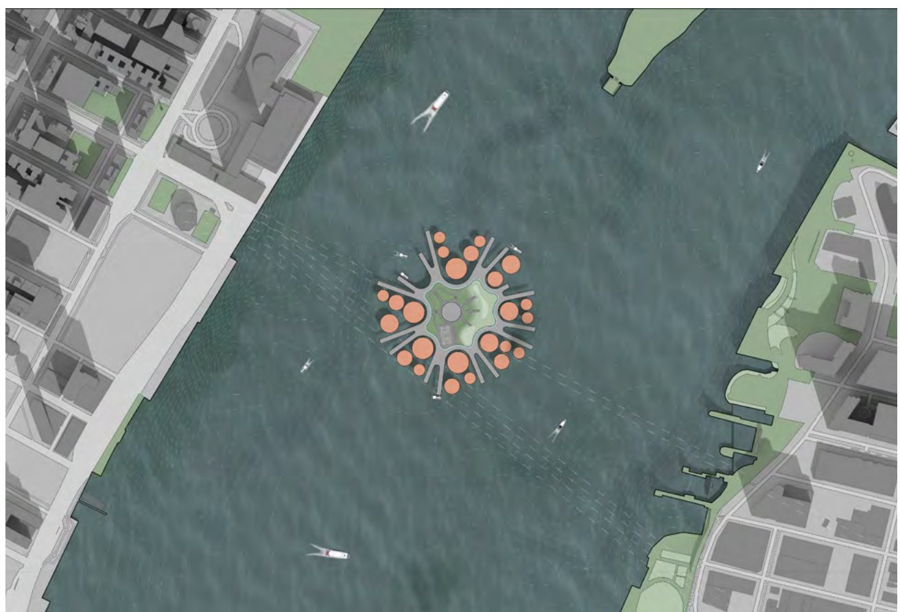
A social disciplinary center rising in the East River, Manhattan. Overhauling the punitive system into a rehabilitative one — humanitarian discipline through collaboration, enhanced living cells, and rehabilitative programs — challenging the prison typology as a whole.
Aerial plan of the East River Social Disciplinary Center archipelago
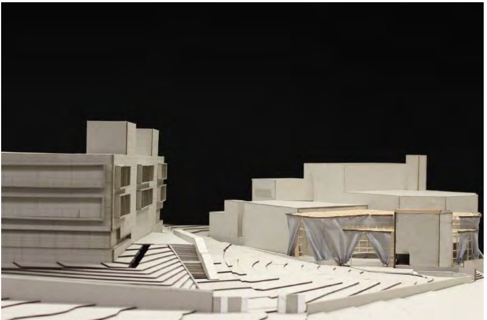
A facade as stage for Aaron Davis Hall at CCNY. Bringing the programmatic activity of the theatre to the facade — where public and private spheres of campus are activated — questioning the purpose of performance through the curtain’s symbolic and material tactility.
Model of the Aaron Davis Hall facade proposal, CCNY
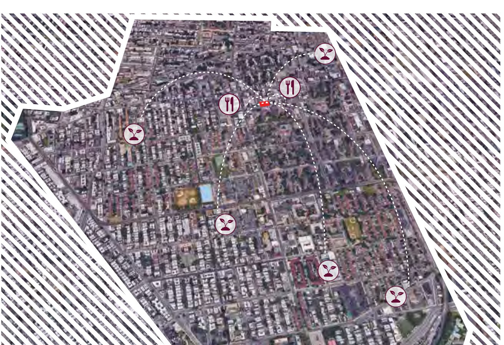
A micro-collective social dwelling on Belmont Avenue, Brownsville, Brooklyn. Home, work, and communal gathering hub — healthy diet, living cost, communal identity — toward self-sufficiency: not exclusive inclusion, but inclusionary exclusion.
Brownsville neighborhood strategy map, Brooklyn
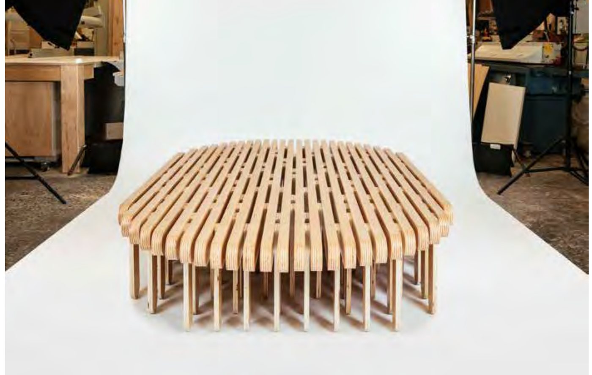
A series of benches in varied sizes promoting activities beyond seating — Korea’s traditional social gathering, reimagined. An unconventionally large bench holds different postures, comfortable for long durations. With Dash Marshall.
Pyung Sang flat bench, bent plywood seating
A precedent study: John Wood the Younger’s 1774 crescent at Bath, England — thirty units behind a unified facade, integrating architecture and landscape. An early rus in urbe, still relevant for contemporary urban housing.
Model of the Royal Crescent, Bath
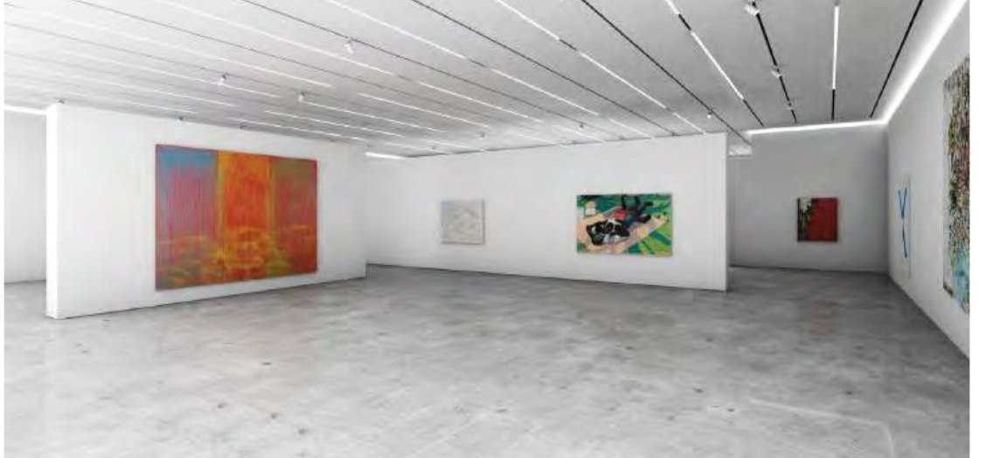
A gallery and auction house — public exhibition, auction, conference, and event spaces organized around a central atrium. With Scott Melancon Architects.
Gallery interior rendering
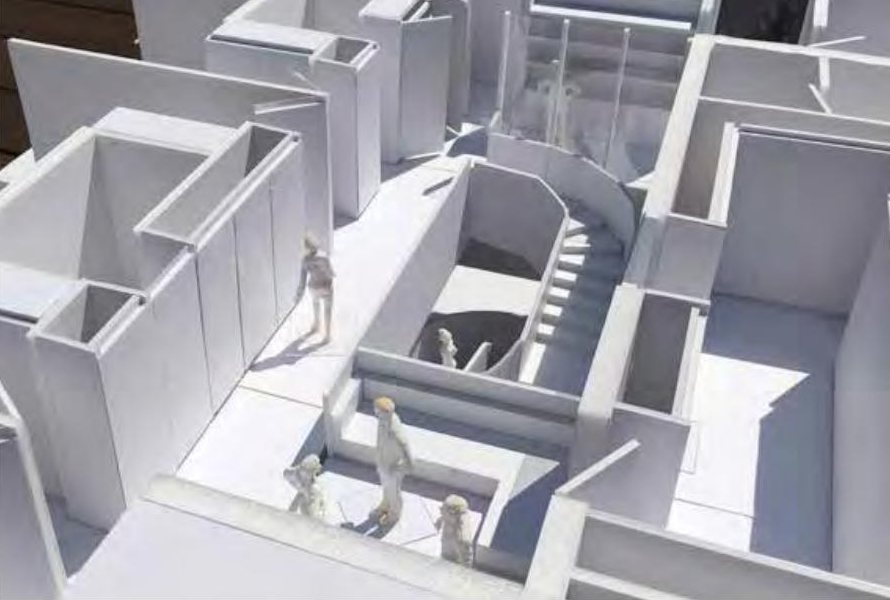
A private residence — a vacation home studied through white models and plans, from interior to aerial view. With Dash Marshall.
White model, aerial view
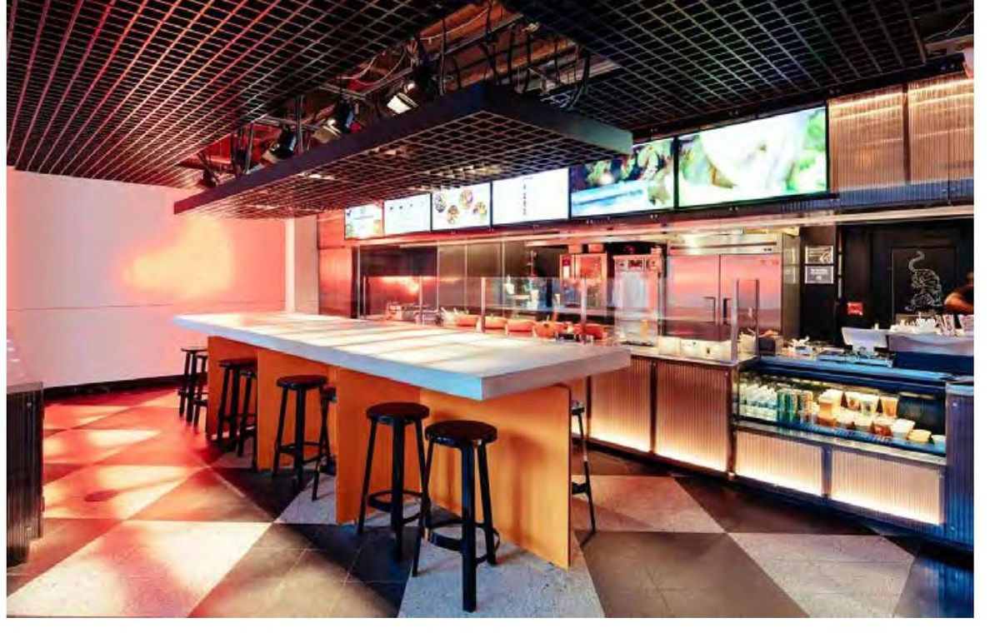
A commercial restaurant renovation for Korilla — the dining room, a product display wall, and construction details. With Dash Marshall.
Dining room